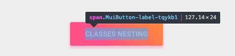

Customizando componentes
Você pode customizar facilmente a aparência de um componente do Material-UI.
Como os componentes podem ser usados em diferentes contextos, existem várias abordagens para isso. Indo da abordagem mais estrita a mais abrangente, são elas:
- Variação específica para uma situação única
- Variação dinâmica para uma situação única
- Variação específica de um componente reutilizado em contextos diferentes
- Variações do Material Design tal como com o componente botão
- Variação do tema global
1. Variação específica para uma situação única
Pode ser necessário alterar o estilo de um componente em alguma implementação específica, para a qual você tem as seguintes soluções disponíveis:
Sobrescrevendo estilos com nomes de classe
A primeira maneira de sobrescrever o estilo de um componente é usar nomes de classe. Cada componente provê uma propriedade className no qual é sempre aplicada ao elemento raiz.
Este exemplo usa o withStyles() high-order componente para injetar estilos customizados no DOM, e passar o nome da classe para o componente ClassNames através da propriedade classes. Você pode escolher qualquer outra solução de estilo, ou até mesmo CSS puro para criar os estilos, mas certifique-se de considerar a ordem de injeção do CSS, como o CSS é injetado no DOM pelo Material-UI para estilizar o componente, ele tem a maior especificidade possível, uma vez que o <link> é injetado na parte inferior do <head /> para garantir que os componentes sejam sempre renderizados.
Sobrescrevendo estilos com classes
Quando a propriedade className não é suficiente, e você precisa acessar elementos mais profundos, você pode tirar proveito da propriedade do tipo objeto classes, com ela podemos customizar todo o CSS injetado pelo Material-UI para um determinado componente.
A lista de classes para cada componente está documentada na página da API do componente, você deve consultar a coluna seção CSS e coluna rule name. Por exemplo, você pode dar uma olhada na API CSS do botão. Como alternativa, você pode usar as ferramentas de desenvolvimento do navegador.
Este exemplo também usa withStyles() (como acima), mas aqui, ClassesNesting está usando a propriedade classes do Botão para fornecer um objeto que mapeia os nomes das classes para sobrescrever (regras de estilo) para os nomes de classes CSS a serem aplicados (valores). As classes existentes do componente continuarão a ser injetadas, portanto, é necessário apenas fornecer os estilos específicos que você deseja adicionar ou sobrescrever.
Observe que, além do estilo do botão, a capitalização do rótulo do botão foi alterada:
Sobrescrevendo estilos por nomes de classes globais
Usando as ferramentas de desenvolvimento
As ferramentas de desenvolvimento do navegador podem poupar muito tempo. Os nomes das classes do Material-UI's seguem um padrão simples no modo de desenvolvimento: Mui[component name]-[style rule name]-[UUID].
Vamos voltar para a demonstração acima. Como você pode substituir o rótulo do botão?

Usando as ferramentas de desenvolvimento, você sabe que precisa direcionar a regra de estilo do componente Button e label:
<Button classes={{ label: 'my-class-name' }} />Forma abreviada
O exemplo acima pode ser condensado usando a mesma API CSS com o componente filho. Neste exemplo, o componente de ordem superior withStyles() está injetando a propriedade classes que é usada pelo componente Button.
const StyledButton = withStyles({
root: {
background: 'linear-gradient(45deg, #FE6B8B 30%, #FF8E53 90%)',
borderRadius: 3,
border: 0,
color: 'white',
height: 48,
padding: '0 30px',
boxShadow: '0 3px 5px 2px rgba(255, 105, 135, .3)',
},
label: {
textTransform: 'capitalize',
},
})(Button);Pseudo-classes
Os estados especiais dos componentes, como hover, focus, disabled e selected, são estilizados com uma especificidade CSS mais alta. Especificidade é um peso que é aplicado a uma determinada declaração CSS.
Para sobrescrever os estados especiais dos componentes, você precisa aumentar a especificidade. Aqui está um exemplo com o estado disable e o componente botão está usando uma pseudo-class (:disabled):
.Button {
color: black;
}
.Button:disabled { /* Aumentamos a especificidade */
color: white;
}<Button disabled className="Button">Às vezes, você não pode usar uma pseudo-classe pois o estado não existe na plataforma. Vamos pegar o componente menu item e o estado selected como exemplo. Além de acesssar os elementos aninhados, a propriedade classes pode ser usada para customizar os estados especiais dos componentes do Material-UI:
.MenuItem {
color: black;
}
.MenuItem.selected { /* Aumentamos a especificidade */
color: blue;
}<MenuItem selected classes={{ root: 'MenuItem', selected: 'selected' }}>Por que preciso aumentar a especificidade para substituir um estado do componente?
Por padrão, a especificação CSS faz com que as pseudo-classes aumentem a especificidade. Para consistência, o Material-UI aumenta a especificidade de suas pseudo-classes customizadas. Isso tem uma vantagem importante, permitir que você escolha o estado que deseja customizar.
Posso usar uma API diferente que requer menos configuração?
Em vez de fornecer valores para a propriedade classes da API, você pode utilizar os nomes de classes globais gerados pelo Material-UI. Ele implementa todas essas pseudo-classes personalizadas:
| Chave classes | Nome da classe global |
|---|---|
| checked | Mui-checked |
| disabled | Mui-disabled |
| error | Mui-error |
| focused | Mui-focused |
| focusVisible | Mui-focusVisible |
| required | Mui-required |
| expanded | Mui-expanded |
| selected | Mui-selected |
.MenuItem {
color: black;
}
.MenuItem.Mui-selected { /* Aumentamos a especificidade */
color: blue;
}<MenuItem selected className="MenuItem">
Use $ruleName para referenciar uma regra local dentro da mesma folha de estilo
O plugin jss-nested (disponível por padrão) pode facilitar o processo de aumentar a especificidade.
const styles = {
root: {
'&$disabled': {
color: 'white',
},
},
disabled: {},
};compila para:
.root-x.disable-x {
color: white;
}⚠️ Você precisa aplicar os dois nomes de classes gerados (root & disabled) no DOM, para que funcione corretamente.
<Button
disabled
classes={{
root: classes.root, // nome da classe, p.ex. `root-x`
disabled: classes.disabled, // nome da classe, p.ex. `disabled-x`
}}
>Sobrescrevendo com estilos em linha
A segunda maneira de sobrescrever o estilo de um componente é usar a abordagem de estilo inline. Cada componente fornece uma propriedade style. Essas propriedades são sempre aplicadas ao elemento raiz.
Você não precisa se preocupar com a especificidade do CSS, pois o estilo em linha tem precedência sobre o CSS regular.
Quando devo usar o estilo inline vs classes?
2. Variação dinâmica para uma situação única
Você aprendeu como sobrescrever o estilo dos componentes do Material-UI nas seções anteriores. Agora, vamos ver como podemos tornar essas sobrescritas dinâmicas. Aqui estão cinco alternativas; Cada um tem os seus prós e contras.
CSS Dinâmico
3. Variação específica de um componente
Pode ser necessário criar uma variação de um componente e usá-lo em diferentes contextos, por exemplo, um botão colorido na página do produto, no entanto, você provavelmente desejará manter seu código sem duplicações (DRY).
A melhor abordagem é seguir a opção 1 e, em seguida, aproveitar o poder de composição do React exportando seu componente customizado para usar onde quer que você precise.
4. Variações do Material Design
A especificação do Material Design documenta diferentes variações de determinados componentes, como a forma na qual os botões são exibidos em diferentes formas: texto (anteriormente "flat"), contido (anteriormente "raised"), FAB e mais.
Material-UI tenta implementar todas essas variações. Por favor, consulte a documentação de Componentes Suportados, para descobrir o status atual de todos os componentes de Material Design suportados.
5. Variação do tema global
A fim de promover a consistência entre os componentes e gerenciar a aparência da interface do usuário como um todo, o Material-UI fornece um mecanismo para aplicar mudanças globais.
As demonstrações desta seção abordam como alterar o tamanho da fonte do botão.
Variáveis de tema
You can adjust the theme configuration variables.
const theme = createMuiTheme({
typography: {
button: {
fontSize: '1rem',
},
},
});Sobrescrita do CSS Global
Você também pode customizar todas as instâncias de um componente com CSS. Nós expomos nomes de classes globais para fazer isso. É muito semelhante a como você customizaria o Bootstrap.
const GlobalCss = withStyles({
// @global é manipulado pelo jss-plugin-global.
'@global': {
// Você deve direcionar [class*="MuiButton-root"] em vez de aninhar temas.
'.MuiButton-root': {
fontSize: '1rem',
},
},
})(() => null);
// …
<GlobalCss />Sobrescrita do tema Global
Você pode aproveitar as vantagens de sobrescrita da chave do tema para potencialmente alterar cada estilo injetado pelo Material-UI no DOM. Saiba mais sobre isso na seção de temas da documentação.
const theme = createMuiTheme({
overrides: {
MuiButton: {
root: {
fontSize: '1rem',
},
},
},
});